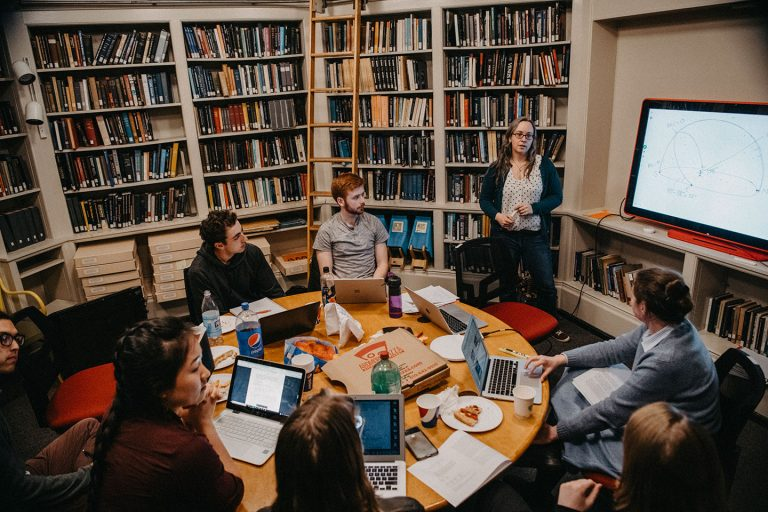
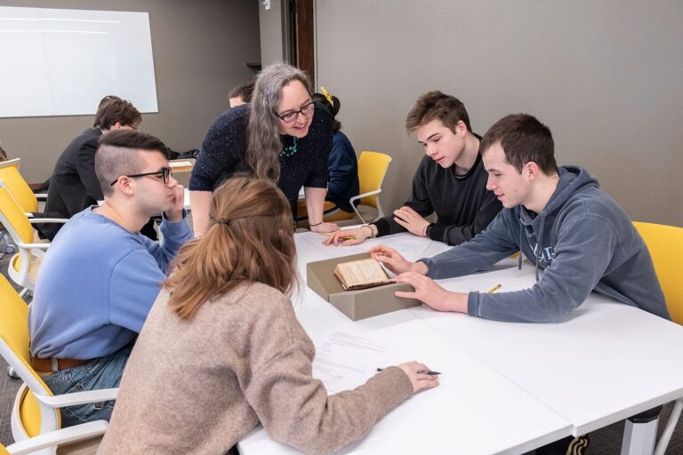

Teaching
 KLM with students in the the Strawbridge Astronomy Library during Observational Astrophysics class, Spring 2019. Photo by Holden Blanco ’17 Haverford Classes |
Haverford Classes
- ASTR341: Advanced Observational Astronomy:Use of the Strawbridge
Observatory 16" for CCD observing, and pre-2025 an observing trip to the Green Bank Observatory to use the 40-foot telescope)
- Fall 2026: optical only
- Fall 2025: 14 students
- Fall 2024: 18 students
- Fall 2022 Syllabus *** Covered as a “Cool Class” on the Haverblog. Imaging assignments featured on the Astronoblog)
- Fall 2020 Syllabus *** 16″ Observing Video on YouTube *** Assignments (with the then new CCD) featured on the Astronoblog
- Spring 2019 Syllabus *** Covered as a “Cool Class” on the Haverblog;
- Intro Physics Labs (lab sections accompanying PHYS 101, 102, 105,
and/or 106): Laboratory instructor for the labs which course which
accompanies first year physics courses.
- PHY101 and PHYS105 Fall 2026
- PHYS101, PHYS105 and PHYS106 labs Fall 2024
- PHYS102, PHYS105 and PHYS106 labs Spring 2022, 2024
- PHYS102, PHYS106 labs, Spring 2019.
- ASTR352: Extragalactic Data Science - A 0.5 credit course covering galaxies, and techniques of data science used in modern extragalactic research Github Respository for ASTR352.
- Spring 2025 (22 students, 0.5 credit, semester long class meeting once a week).
- Spring 2024 Syllabus (6 students; a 0.5 credit, semester long class meeting once a week).
- Fall 2021 Syllabus. Covered as a Cool Class by the Haverblog. Done in second half of Fall 2021 semester (in series with Andrea Lommen's 0.5 credit course on Gravitational Waves).
- This class was a kind of evolution of ASTR344:Galaxies and Cosmology, which I taught as a a full credit upper level galaxies and cosmology class for Astro majors in Spring 2018 (my first class at Haverford!)
- ASTR101: Astronomical Ideas. A non-mathematical introduction to
astronomy aimed at non-science majors. I usually use OpenStax
Astronomy as the textbook, and also make use of Galaxy Zoo Astro101
materials.
- Spring 2025 - 60 students in one (for Haverford) giant lecture
- Spring 2020 Syllabus – 60 students in two sections – Covered as a “Cool Class” on the Haverford Blog – the first half in person, the second half remotely due to Covid-19, which led me to develop content for an Observing at Home Activity and Observing with Stellarium Activity
- PHYS303: Statistical Physics. One of the four core upper-level physics
classes at Haverford. Used Blundell & Blundell
(which is fun for me, as I took Statistical Mechanics from Steve
Blundell as an undergraduate at Oxford).
- Fall 2025 (PDF syllabus), 38 students
- Fall 2023 (PDF syllabus) 34 students
- WRPR194: Explaining the Universe: a first year writing seminar themed around writing about astronomy (always 12 students).
- Spring 2023 Syllabus, Spring 2022 Syllabus
- Spring 2022: covered as a Cool Class by the Haverblog.
- ASTR204: Introduction to Astrophysics: a one semester introduction to astrophysics (prereq is PHYS105 or the equivalent and students should have taken, or be co-enrolled in PHYS106 or equivalent). This course covers the basic of stellar astrophysics, the interstellar medium, galaxies and cosmology as well as an introduction to python for astronomy.
- Fall 2021 Syllabus — Fall 2019 Syllabus (first time taught as ASTR204 – a modification of the old two semester Introduction to Astrophysics (ASTR205; which I taught in Fall 2018, and ASTR206) to fit it into a single semester class. — Fall 2018: I taught the similar class: ASTR205: Introduction to Astrophysics I (stellar astrophysics and planets)
- PHYS105: Fundamental Physics I: for most students, this is the first physics class in the Physics/Astrophysics/Astronomy major track, this class covers classical (Newtonian) mechanics and thermodynamics with examples mainly drawn from the physical sciences. Along with PHYS106 this is intended to be a one-year introduction suitable for students interested in the physical sciences.
- ASTR152: First Year Seminar in Astrophysics
- A half credit topics class in astrophysics intended for students taking first year physics classes.
- Taught Spring 2019, 2018
 KLM with students in Astronomical Ideas (Feb 2020) in Quaker and Special Collections in the library looking at archival astronomical material. Photo: Emily Williams ’20. |
Pedagogical Learning/Research
In Fall 2018 I had the pleasure of taking the Teaching and Learning Institute Seminar (a Haverford/Bryn Mawr joint pedagogy seminar).
In collaboration with the VOLCROWE team I published a short paper on how/if people learn while engaging in online citizen science: “Science Learning Via Participation in Online Citizen Science“, Masters et al. 2016, JCOM, 15, 3.
I am a Fellow of the Higher Education Academy (in the UK). This designation came following the submission of this set of Case Studies and Reflections on my teaching at Portsmouth. My application was commended for the following points:
- A strong application which evidenced all of the values of the UKPSF
- A democratic approach to learning and teaching with particular focus on the inclusive curriculum
- Your approach to the teaching of scientific writing and fostering effective learning environments for your students
Portsmouth Classes
- Introduction to Computational Physics (2016, 2017)
- Application of Physics and Space Science (2015, 2016, 2017)
- Mathematical Physics I (2011, 2014)